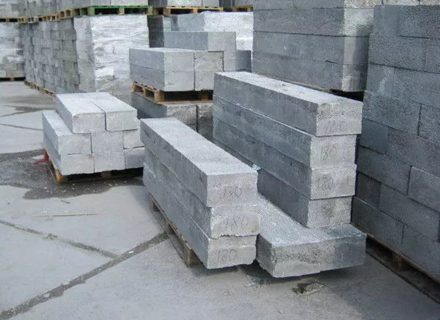

Перемычки из полистеролбетона
Описание
Перемычки из полистеролбетона — лёгкие и прочные элементы для перекрытий, обеспечивающие теплоизоляцию и устойчивость.
Характеристики
- Длина: 1-6 м
- Прочность: М15-М25
- Вес: 10-20 кг
- Теплопроводность: 0.15 Вт/м·К
Цена: 1200 руб/шт
Назад к каталогу